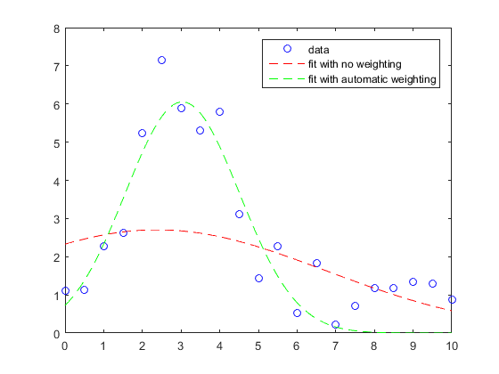

gaussianFit
Gaussian fit using the least-squared solution in presence of known covariance
Contents
Syntax
[P,PE] = gaussianFit(X,Y) [P,PE] = gaussianFit(X,Y,bool) [P,PE] = gaussianFit(X,Y,w) [P,PE] = gaussianFit(X,Y,V)
Description
[P,PE] = gaussianFit(X,Y) calculates the gaussian fit using the least-squared solution with equal weights and assuming no correlation (identity covariance matrix) between points. X is an (n x 1) array and Y is a (n x 1) array. If Y is a (n x m) array, the fit is done independently in each column of Y. P is the (3 x m) matrix of fitted parameters . PE is the (3 x m) matrix with the uncertainties of the fitted parameters.
[P,PE] = gaussianFit(X,Y,bool) if bool=true the vector of weights is constructed using a special algorithm that creates a gaussian distribution around the peak of Y with sigma equal to the r.m.s. of X.*Y This algorithm optimizes the fit interval for most cases. If bool=false the function returns the default behavior.
[P,PE] = gaussianFit(X,Y,w) the vector of weights w is provided as input. Length of w must be n.
[P,PE] = gaussianFit(X,Y,V) The covariance matrix V is provided as input. V must be (n x n).
Examples
Gaussian fit of multiple sets of data
All sets of data must be non-zero positive and must have the same x-axis
X = 1:10; % defines the x-axis Q1 = [5,4,4]; % first gaussian parameters mean,sigma,amplitude Q2 = [4.2,3.2,7.8]; % second gaussian parameters mean,sigma,amplitude Q3 = [8.2,1.2,4.8]; % third gaussian parameters mean,sigma,amplitude Y1 = Q1(3).*exp(-((X-Q1(1)).^2)./(2*Q1(2)^2)); Y2 = Q2(3).*exp(-((X-Q2(1)).^2)./(2*Q2(2)^2)); Y3 = Q3(3).*exp(-((X-Q3(1)).^2)./(2*Q3(2)^2)); Y = [Y1',Y2',Y3']; [P,~] = gaussianFit(X,Y); XF = 1:0.1:10; F1 = P(3,1).*exp(-((XF-P(1,1)).^2)./(2*P(2,1)^2)); F2 = P(3,2).*exp(-((XF-P(1,2)).^2)./(2*P(2,2)^2)); F3 = P(3,3).*exp(-((XF-P(1,3)).^2)./(2*P(2,3)^2)); F = [F1',F2',F3']; plot([X',X',X'],Y,'Marker','o','LineStyle','none') hold on plot([XF',XF',XF'],F,'Marker','none','LineStyle','--')
Gaussian fit with automatic weighting of experimental data
A random noise is added to a gaussian-generated data set
X = 0:0.5:10; % defines the x-axis Q = [3,1.2,5.7]; % gaussian parameters mean,sigma,amplitude Y = Q(3).*exp(-((X-Q(1)).^2)./(2*Q(2)^2)) + 2.*rand(size(X)); [P0,P0E] = gaussianFit(X,Y,false); [P1,P1E] = gaussianFit(X,Y,true) XF = 0:0.1:10; F0 = P0(3,1).*exp(-((XF-P0(1,1)).^2)./(2*P0(2,1)^2)); F1 = P1(3,1).*exp(-((XF-P1(1,1)).^2)./(2*P1(2,1)^2)); figure plot(X,Y,'bo',XF,F0,'r--',XF,F1,'g--') legend('data','fit with no weighting','fit with automatic weighting')
P1 =
3.0324
1.4723
6.0553
P1E =
0.6688
0.4554
0.5131
 Gaussian fit over selected interval
On the previous data set, the fit is performed on the [1,5] interval
w = zeros(size(X)); I = X>=1 & X<=5; w(I) = 1; [P2,P2E] = gaussianFit(X,Y,w) F2 = P2(3,1).*exp(-((XF-P2(1,1)).^2)./(2*P2(2,1)^2)); figure plot(X,Y,'bo',XF,F1,'g--',XF,F2,'m--') legend('data','fit with automatic weighting','fit over selected interval')
P2 =
2.9276
1.2280
6.6850
P2E =
0.4743
0.2249
0.9153
Gaussian fit with covariance matrix
The fit is performed assuming 20% correlation between points
Q = [5,1.2,10]; % gaussian parameters mean,sigma,amplitude Y = Q(3).*exp(-((X-Q(1)).^2)./(2*Q(2)^2)) + 0.5.*rand(size(X)); V = 0.2 .* ones(length(X)) + 0.8 .* diag(ones(size(X))); [P1,P1E] = gaussianFit(X,Y,true) [P3,P3E] = gaussianFit(X,Y,V) F1 = P1(3,1).*exp(-((XF-P1(1,1)).^2)./(2*P1(2,1)^2)); F3 = P3(3,1).*exp(-((XF-P3(1,1)).^2)./(2*P3(2,1)^2)); figure plot(X,Y,'bo',XF,F1,'g--',XF,F3,'k--') legend('data','fit with automatic weighting','fit with covariance matrix')
P1 =
4.9990
1.2444
10.2079
P1E =
0.2672
0.0768
0.1918
P3 =
5.0083
1.6588
6.3161
P3E =
1.0623
0.5572
0.2217